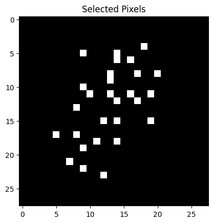

Simulated Annealing is a probabilistic optimization algorithm inspired by annealing in metallurgy. It is used for finding an approximate solution to an optimization problem. The algorithm mimics the physical process of annealing, where a material is heated to a high temperature and then gradually cooled to remove defects, minimizing the overall energy of the system.
Add details about the implementation of Simulated Annealing for feature selection in image classification tasks.
